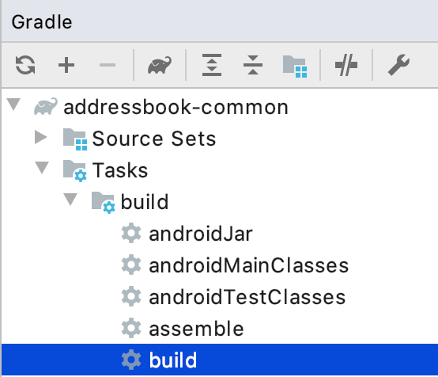

Well, now that we have a working Kotlin multi-platform library, and 3 three applications on top of that, we need to go a little bit further by exploring the Kotlin/Multiplatform ecosystem.
To fulfill this journey, we will start by replacing our manual Dependency Injection mechanism by a Kotlin/Multiplatform library: Kodein-DI.
Enhancing the common library
Let’s re-open our addressbook-common project to improve it :)
Dependencies
As we are adding a new library to our Kotlin multi-platform project, get your build.gradle.kts
file and add the following dependency in your commonMain group.
kotlin {
sourceSets {
val commonMain by getting {
dependencies {
// ...
implementation("org.kodein.di:kodein-di-erased:6.4.1") (1)
}
}
}
}| 1 | Adds the latest version of kodein-di, based on Kotlin 1.3.50 |
|
In one of the previous chapters we defined that our Gradle build enables an experimental feature by adding the following configuration: settings.gradle.kts
This allows us to only define the dependency on |
The kodein-di libraries are available on jcenter
|
Usage
|
If you have some issues to get your imports for the newly imported dependency, refresh your gradle project
|
Now that our dependencies are well imported we should go to the package com.mybusiness.di and add some code.
Create a new Kotlin source file addressBookModule.kt and add the following lines:
package com.mybusiness.di
val addressBookModule = Kodein.Module("addressBookModule") { (1)
bind() from singleton { ContactApi() } (2)
// bind() from singleton { ContactListPresenter(instance()) } (3)
// bind() from singleton { ContactDetailPresenter(instance()) } (3)
// bind() from singleton { ContactCreationUpdatePresenter(instance()) } (3)
}| 1 | Creates a Kodein-DI module that could be imported later, in a Kodein-DI container. |
| 2 | Binds the interface for our backend API, as a singleton. |
| 3 | Binds every presenters, a singletons. As each of the presenters needs a ContactApi as parameter,
the instance() function have the responsibility to retrieve the right ContactApi instance from the Kodein-DI container. |
Now that we have a code dependency defined for ContactApi we could change our presenters to inject it instead of having it as a constructor parameter.
class ContactListPresenter(
override val kodein: Kodein, (2)
coroutineContext: CoroutineContext = ApplicationDispatcher
) : ContactList.Presenter, BasePresenter<ContactList.View>(coroutineContext), KodeinAware { (1)
private val contactApi: ContactApi by instance() (3)
//...
}| 1 | Implements the KodeinAware interface to be able to use Kodein-DI functions without calling a Kodein-DI container everytime |
| 2 | Overrides the kodein property to respect the contract from KodeinAware |
| 3 | Inject the ContactApi in the presenter by using the function instance() from Kodein-DI. It will retrieve the right instance of ContractApi depending on its type and the current context. |
class ContactDetailPresenter(
override val kodein: Kodein, (2)
coroutineContext: CoroutineContext = ApplicationDispatcher
) : ContactDetail.Presenter, BasePresenter<ContactDetail.View>(coroutineContext), KodeinAware { (1)
private val contactApi: ContactApi by instance() (3)
//...
}| 1 | Implements the KodeinAware interface to be able to use Kodein-DI functions without calling a Kodein-DI container everytime |
| 2 | Overrides the kodein property to respect the contract from KodeinAware |
| 3 | Inject the ContactApi in the presenter by using the function instance() from Kodein-DI. It will retrieve the right instance of ContractApi depending on its type and the current context. |
class ContactCreationUpdatePresenter(
override val kodein: Kodein, (2)
coroutineContext: CoroutineContext = ApplicationDispatcher
) : ContactCreationUpdate.Presenter, BasePresenter<ContactCreationUpdate.View>(coroutineContext), KodeinAware { (1)
private val contactApi: ContactApi by instance() (3)
//...
}| 1 | Implements the KodeinAware interface to be able to use Kodein-DI functions without calling a Kodein-DI container everytime |
| 2 | Overrides the kodein property to respect the contract from KodeinAware |
| 3 | Inject the ContactApi in the presenter by using the function instance() from Kodein-DI. It will retrieve the right instance of ContractApi depending on its type and the current context. |
We are now able to add the presenters to the Kodein-DI bindings. Let’s get back to addressBookModule.kt and add the following lines:
package com.mybusiness.di
val addressBookModule = Kodein.Module("addressBookModule") {
// ...
bind<Kodein>() with singleton { this.kodein } (1)
bind() from singleton { ContactListPresenter(instance()) } (2)
bind() from singleton { ContactDetailPresenter(instance()) } (2)
bind() from singleton { ContactCreationUpdatePresenter(instance()) } (2)
}| 1 | Binds the current Kodein-DI container, thus we are able to inject it in our presenters |
| 2 | Binds every presenters, a singletons. As each of the presenters needs a Kodein object as parameter,
the instance() function have the responsibility to retrieve the right Kodein instance from the Kodein-DI container. |
We have defined and used the code dependencies of our Kotlin multi-platform library. Now we should be able to change our CommonInjector before using it in the applications.
So, open CommonInjector.kt and replace its content.
package com.mybusiness.di
@ThreadLocal
object CommonInjector {
val kodein = Kodein.lazy { (1)
import(addressBookModule) (2)
}
// Presenters
fun contactListPresenter(): ContactListPresenter { (3)
val presenter = kodein.direct.instance<ContactListPresenter>()
println("ContactListPresenter instance: $presenter") (4)
return presenter
}
fun contactDetailPresenter() = kodein.direct.instance<ContactDetailPresenter>() (3)
fun contactCreationUpdatePresenter() = kodein.direct.instance<ContactCreationUpdatePresenter>() (3)
}| 1 | Creates the Kodein-DI container |
| 2 | Imports our previously created Kodein-DI module addressBookModule |
| 3 | Uses the Kodein-DI container to retrieve each of the presenters |
| 4 | Let’s print our ContactListPresenter instance to see the changes on the applications. |
That’s it for the common library part. You may have noticed that there will be no direct impact for our three different applications. We could call that mechanism a 'bridge' for our Kotlin multi-platform library to be used on every platforms. But, even if you do not any changes to do on your applications, Dependency Injection may help you to decouple your code, and make the unit tests easier.
| Spoiler Alert: this won’t be that simple for Android, as we will fully use the power of Kodein-DI |
Building and publishing a new release
As always, once we have improve our library, we should build it and publish it to use it on our applications.
In the Gradle script change the version from 1.0.0 to 2.0.0!
-
For the JVM target
Go to the Gradle pane, in Tasks > publishing, double click on publishToMavenLocal to run this Gradle task.

-
For all the other platforms
To build your Kotlin multi-platform library go to the Gradle pane and run the task build in the build group.

Done! Now we just have to use the new release on every platforms!
Using the new version of our Kotlin multi-platform library
We are going backward, from the Web to Android, as the Android part will bring some nice highlights on what could/should be Kotlin multi-platform libraries in the future.
On our Web application
Open your Web application project.
Re-import the JS module
As we didn’t manage publishing libraries for Kotlin/JS projects we must import the new version of our Kotlin multi-platform library manually, again.
In your Web application project, remove the addressbook-common and node_modules directories.
To empower our web application with the Kotlin multi-platform library, we need to copy the generated Node module into our React project.
From… |
…to |
|
|


|
Then, rename the directory |

Finally, open a terminal in the directory of the web application and run the command yarn install, you should see something like that:
$ yarn install yarn install v1.19.2 [1/4] üîç Resolving packages... [2/4] üöö Fetching packages... [3/4] üîó Linking dependencies... [4/4] üî® Building fresh packages... ✨ Done in 16.98s.
Running the application
You can now run the Web application by using yarn start in your terminal.
|
|


Obviously, nothing has changed, but its working right ?
|
We have wrote that when we retrieve the ContactListPresenter instance: [object Object] |
Let’s get to the iOS part.
On our iOS application
Open your Xcode project, iOS AddressBook.
We have done a little bit of cheating here.
Indeed, previously we have configured our Xcode project to get the addressbook-common.framework
file directly into the build directory of our Kotlin multi-platform project, thus at every build we change our iOS dependency.
So, just run the application to see that everything is working properly!
|
We have wrote that when we retrieve the ContactListPresenter instance: com.mybusiness.presentation.ContactListPresenter@25bfd08 |
On our Android application
Here come the funny part. In the first place Kodein-DI was targeting the JVM, and had a special treatment to be a real asset on Android. That’s why today its the most advanced part for the Kotlin/Multiplatform integration in Kodein-DI.
So, let’s re-open Android Studio on our AddressBook project.
Adding dependencies
Open the Gradle script build.gradle in the app module, change the version of our Kotlin multi-platform library
and add a new dependency on Kodein-DI.
dependencies {
implementation 'com.mybusiness:addressbook-common:2.0.0' (1)
implementation 'org.kodein.di:kodein-di-generic-jvm:6.4.1' (2)
implementation 'org.kodein.di:kodein-di-framework-android-x:6.4.1' (3)
}| 1 | Moving from version 1.0.0 to 2.0.0. |
| 2 | Adding the latest JVM implementation of Kodein-DI |
| 3 | Adding the latest framework implementation of Kodein-DI to boost our AndroidX development |
Benefits from Kodein-DI
While enhancing the Android application we won’t be using the CommonInjector object to get our presenters.
Instead, we will use the "closest Kodein pattern", that will find the nearest instance of Kodein from child to parent, thus from Fragment to Activity, or from Activity to Application.
But, first of all, we need to set our AddressBookApplication class implements KodeinAware.
class AddressBookApplication: Application(), KodeinAware { (1)
override val kodein = CommonInjector.kodein (2)
}| 1 | Implements the class KodeinAware that is allowing a seamless use of Kodein-DI. |
| 2 | Overrides the kodein property from KodeinAware, this is giving us a global Kodein-DI container accessible from anywhere in our application. |
Next, we can go to the views that need to inject a presenter, to be able to render contacts` information.
class ItemListActivity : AppCompatActivity(), ContactList.View, KodeinAware { (1)
//...
override val kodein: Kodein by closestKodein() (2)
private val presenter by instance<ContactListPresenter>() (3)
//...
}| 1 | Implements the KodeinAware interface to be able to use the Kodein-DI tools without explicitly naming them (e.g. instance() funtion) |
| 2 | Overrides the kodein property from KodeinAware by using the closest pattern to find the nearest Kodein-DI container, in our case the one defined in AddressBookApplication. |
| 3 | Uses the instance() function to retrieve a ContactListPresenter from the Kodein-DI container, regarding of its type and the current context. |
class ItemDetailFragment : Fragment() , ContactDetail.View, KodeinAware { (1)
//...
override val kodein: Kodein by closestKodein() (2)
private val presenter by instance<ContactDetailPresenter>() (3)
//...
}| 1 | Implements the KodeinAware interface to be able to use the Kodein-DI tools without explicitly naming them (e.g. instance() funtion) |
| 2 | Overrides the kodein property from KodeinAware by using the closest pattern to find the nearest Kodein-DI container, in our case the one defined in AddressBookApplication. |
| 3 | Uses the instance() function to retrieve a ContactDetailPresenter from the Kodein-DI container, regarding of its type and the current context. |
Running the application
Just running the Android application inside an Android Simulator should work.
|
We have wrote that when we retrieve the Nothing should be printed in this case, because we did not use the |